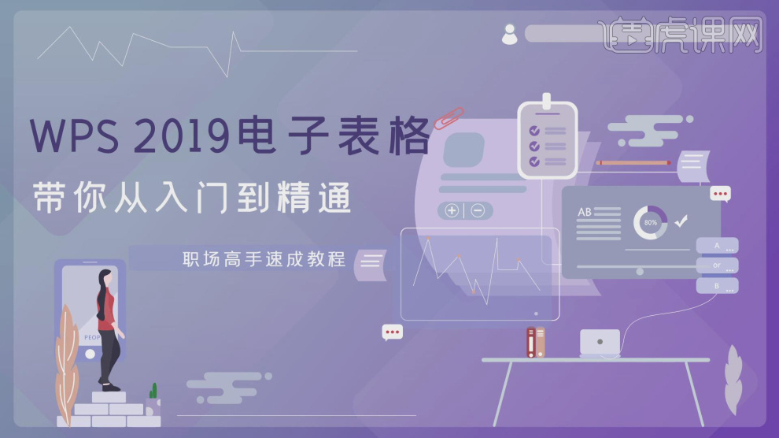
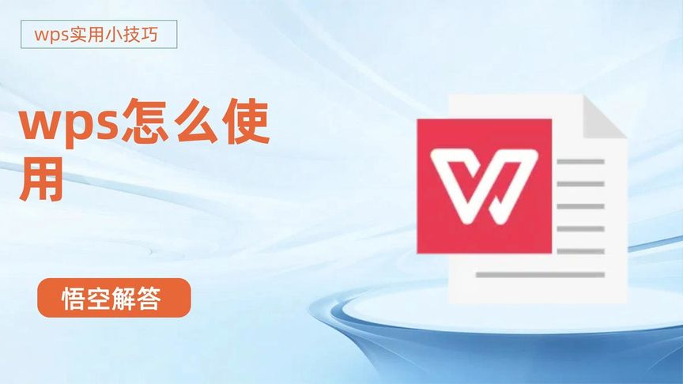
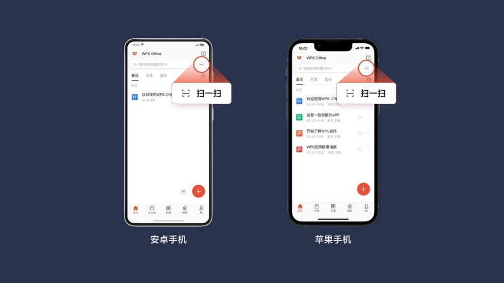
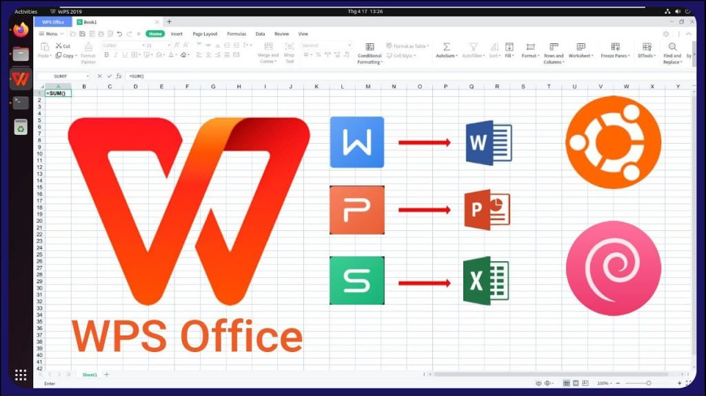

WPS PDF目录在哪？
2025年2月28日
WPS PDF的目录功能位于左侧面板。在打开PDF文件后，点击界面左侧的“目录”按钮，或者在右上角点击“三条横线”图标，再选择“目录”。如果PDF文件本身包含目录，系统会自动显示目录结构，用户可以通过点击目录项快速跳转到相应章节。

如何在WPS PDF中显示目录
打开WPS PDF文件查看目录
- 打开WPS PDF阅读器：首先，启动WPS Office并打开你需要查看的PDF文件。WPS PDF阅读器会自动加载文档内容，并显示在主界面中。如果文件中已经嵌入了目录，系统会在左侧面板或页面上方显示目录结构。
- 定位目录面板：在WPS PDF阅读器界面的左侧，有一个侧边栏。点击“目录”选项，系统会自动展示文件中的目录结构。这是查看文档章节、标题和子标题的便捷方式。
- 自动生成目录：如果PDF文件包含结构化的标题（如通过大纲设置），WPS PDF会根据这些标题自动生成目录。确保文件本身已经设置了目录样式，否则目录可能不会显示。
使用目录快速跳转章节
- 点击目录项跳转：在WPS PDF中，目录不仅是查看文件大纲的工具，还能作为跳转到特定章节的快捷方式。点击目录中的任何一项，系统会自动跳转到相应的页面，方便快捷地浏览文件内容。
- 通过目录查找特定内容：如果你在寻找文件中的某个章节或内容，使用目录功能可以帮助你快速定位目标页面。只需找到目录中的相关章节标题，点击即可进入对应部分。
- 提升阅读效率：目录功能特别适用于长篇文档或书籍，它能帮助用户快速跳转至需要的部分，避免了翻阅大量页面的麻烦。在需要快速浏览或查找具体信息时，目录的作用尤为重要。
WPS PDF目录功能介绍
自动生成PDF文件目录
- 自动识别文档标题：WPS PDF能够自动识别PDF文件中的标题和子标题，并基于这些标题生成目录。当文档采用了标准的大纲样式（如使用标题1、标题2等样式），WPS会根据这些结构自动提取并生成目录。
- 自动更新目录内容：当文件内容发生变化时（例如增加或删除章节），WPS PDF会自动更新目录，确保目录项与文档内容一致。这让用户无需手动调整目录内容，极大提高了使用效率。
- 提高文档浏览体验：通过自动生成目录，WPS PDF能让用户一目了然地查看文件的章节结构，并快速定位到需要阅读的部分，尤其适用于长篇或复杂的文档。
手动设置PDF目录结构
- 自定义目录项：如果你想更精细地控制PDF文件的目录结构，WPS PDF允许用户手动添加、删除或修改目录项。通过“插入”选项中的“目录”功能，用户可以自定义目录的层级结构、标题名称和顺序。
- 创建手动目录链接：对于没有自动生成目录的文件，用户可以选择手动添加目录项并将其与文档中的具体页面链接。通过这种方式，你可以在PDF中自由设计符合自己需求的目录结构。
- 调整目录格式：在手动设置目录时，WPS PDF提供了灵活的格式调整功能。你可以选择不同的字体、字号、颜色等，以确保目录不仅清晰易读，还能符合文档的整体排版风格。

如何编辑WPS PDF目录
修改PDF目录的结构
- 调整目录的层级：在WPS PDF中，你可以调整目录的层级结构，重新组织章节顺序。通过“编辑”功能，用户可以改变每一章节的标题级别，例如将某个章节提升或下调为子标题，或者将其提升为一级标题，重新定义文档的大纲结构。
- 修改标题文本：如果PDF文件中的章节标题需要更改，你可以直接修改目录中的标题文本。这有助于纠正拼写错误或更新章节名称。通过点击目录中的某个条目，你可以编辑该条目的名称，确保目录与文档内容同步。
- 更新目录显示：在修改目录结构后，WPS PDF会自动更新显示内容，确保目录中的所有项与实际内容相符。你可以随时查看目录是否已根据修改过的结构自动调整，并确保文件的大纲层次清晰。
添加或删除目录项
- 手动添加目录项：如果需要向PDF文件中添加新的章节或内容，可以在WPS PDF的目录中手动插入新的目录项。通过选择合适的位置，点击“插入”按钮并输入新的章节标题，随后该目录项就会显示在指定位置，方便后续阅读。
- 删除不需要的目录项：若某些章节不再需要在目录中显示，可以通过右键点击该目录项，选择删除。删除目录项后，WPS PDF会自动调整剩余目录项的顺序，并更新目录的显示内容。
- 调整目录项顺序：当目录项数量增多或减少时，WPS PDF允许用户根据需要调整目录项的顺序。可以通过拖动目录项的位置或使用上下箭头按钮快速调整，使目录结构符合文档的内容逻辑。

WPS PDF目录快捷键使用方法
通过快捷键查看目录
- 打开目录面板快捷键：在WPS PDF中，你可以使用快捷键快速打开目录面板。按下“Ctrl + F7”键，目录面板会立刻显示在屏幕左侧或顶部，便于你查看文档的章节结构。
- 快速跳转目录项：在目录面板中，按“Ctrl + Tab”可以在不同的目录项之间快速切换。这使得你无需手动搜索，可以快速浏览到需要的章节或小节标题。
- 查看或隐藏目录：使用“Ctrl + Shift + D”组合键，你可以轻松显示或隐藏目录面板。如果你在阅读文档时希望专注于内容，使用这个快捷键可以快速收起目录，减少屏幕杂乱。
快速跳转到目录中的页面
- 点击目录项跳转：按住“Ctrl”键并点击目录中的任意项，WPS PDF将会直接跳转到该目录项对应的页面。通过这种方式，用户可以快速访问文档中的任何章节，而无需手动滚动查找。
- 使用快捷键定位目录项：按“Alt + 1”到“Alt + 9”快捷键，你可以快速跳转到目录中的第1到第9个项。这种方法尤其适用于文档内容较多时，能够快速定位并浏览需要的章节内容。
- 快速返回上一页：若你在跳转到某一目录项后想返回原先的页面，可以使用快捷键“Alt + 左箭头”返回上一页。这让你在不同章节之间切换时更加灵活，提升阅读的效率和体验。

WPS PDF目录与PDF阅读体验
目录如何提升阅读效率
- 快速定位内容：通过目录功能，用户可以一目了然地看到文档的大纲结构，快速定位到需要阅读的章节或部分。无论是查找特定内容还是浏览大纲，目录提供了便捷的导航，减少了逐页查找的时间。
- 精准跳转页面：点击目录中的任意章节标题，WPS PDF会立即将你带到相应页面，避免了手动滚动和翻页的麻烦。用户可以快速切换章节，提高工作或学习的效率。
- 避免重复查找：对于需要频繁查看某一部分内容的文档，目录功能能够帮助用户保存上次的定位，避免了重复查找。即使文档很长，目录也能确保每次阅读时迅速回到目标位置，节省时间。
目录对长篇PDF文档的帮助
- 节省阅读时间：对于长篇文档，如报告、书籍或研究论文，目录功能能显著节省阅读和查找信息的时间。用户只需通过目录跳转，就能快速浏览到文档中的特定章节，而不必浪费时间逐页翻阅。
- 提升文档结构化阅读体验：长篇PDF文档通常信息量大，目录帮助用户快速了解文档的结构，理清章节之间的关系，使阅读更加高效且有条理。尤其是在查阅特定内容时，目录结构显得尤为重要。
- 增强文档导航性：对于需要多次查阅的长篇文档，目录不仅仅是一个参考工具，还能够作为一种导航帮助用户在不同章节之间流畅切换，特别是当文档包含大量图表、注释和附录时，目录功能尤为重要。
WPS PDF文件没有显示目录，怎么办？
如果WPS PDF文件没有显示目录，可能是因为该文件没有嵌入目录。你可以尝试在WPS PDF中手动添加目录，或者使用其他PDF编辑工具重新生成目录。如果文件本身已经设置了目录，但没有显示，检查是否有显示目录的选项，通常可以在左侧面板或顶部菜单中找到“目录”按钮。
如何在WPS PDF中显示目录面板？
要在WPS PDF中显示目录面板，首先打开PDF文件，然后在界面左侧找到“目录”选项，点击即可显示。如果目录项未显示，可能是该PDF文档没有内嵌目录，或者目录功能未启用。确保文件中有大纲结构或章节标题，WPS会自动生成目录。
WPS PDF支持哪些目录类型？
WPS PDF支持两种主要的目录类型：自动生成目录和手动创建目录。自动目录是根据文档的标题和小节结构自动生成的，而手动创建目录则允许用户自己插入和编辑目录项。你可以根据文档内容选择最合适的目录类型来使用。
上一篇：
WPS网盘图标怎么删除？
最新文章
如果WPS未保存文档并意外关闭，可以通过“自动恢复”功能尝试找回数据。打开WPS…
在WPS中打印Excel文件，首先打开文件并点击左上角的“文件”按钮，选择“打印…
在WPS中使用格式刷，首先选中已设置好格式的单元格或文本，点击“开始”菜单中的“…
打开WPS Office，点击左上角“WPS文字”或“WPS表格”菜单。选择“选…
WPS PDF的目录功能位于左侧面板。在打开PDF文件后，点击界面左侧的“目录”…
要删除WPS网盘图标，首先右键点击桌面上的WPS网盘图标，选择“删除”或“卸载”…